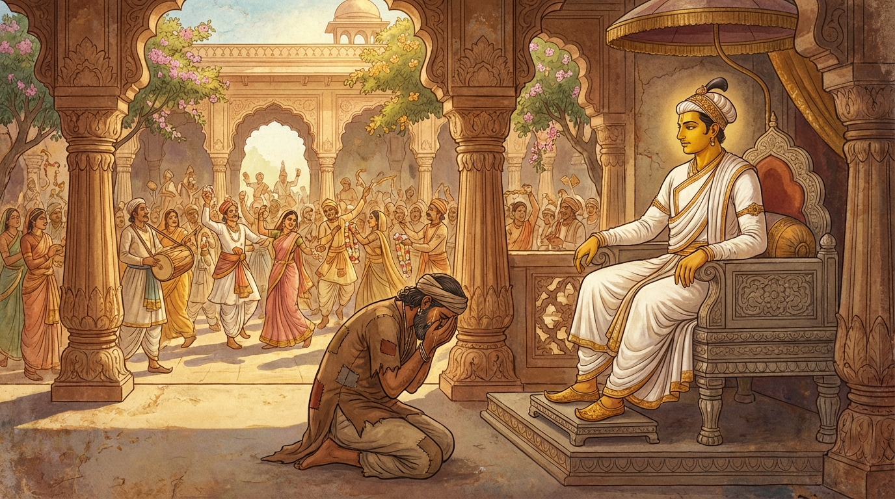

10. මහා පිංගල ජාතකය (240)
“සබ්බො ජනො” (සියලු ජනයා) යන මේ දේශනාව බුදුරජාණන් වහන්සේ ජේතවනාරාමයෙහි වැඩවසන කල්හි දේවදත්ත තෙරුන් අරබයා වදාළ සේක. දේවදත්ත තෙරුන් බුදුරජාණන් වහන්සේ කෙරෙහි වෛර බැඳගෙන, නව මසක් ගිය තැන ජේතවන ද්වාර කොෂ්ඨකය (දොරටුව) අභියස දී පොළොවෙහි ගිලුණු විට, ජේතවනවාසීහු ද සියලු රටවැසියෝ ද “බුදුරජාණන් වහන්සේට කටුවක් වැනි වූ දේවදත්ත තෙරුන් පොළොවෙහි ගිලුණේ ය. දැන් සම්මා සම්බුදුරජාණන් වහන්සේ සතුරන් නැසූ සේක” යයි සතුටු වූහ. ඔවුන්ගේ කථාව අසා පරම්පරා ඝෝෂාවෙන් (කටින් කට යාමෙන්) මුළු දඹදිව වාසී යක්ෂ, භූත, දේව සමූහයා ද අතිශයින් සතුටු වූහ. ඉක්බිති එක් දිනක් භික්ෂූන් වහන්සේලා දම්සභාවෙහි දී, “ඇවැත්නි! දේවදත්ත තෙරුන් පොළොවෙහි ගිලුණු කල්හි, ‘බුදුරජාණන් වහන්සේට විරුද්ධ වූ දේවදත්තයා පොළොවට ගිලුණේ ය’ යි මහජනයා සතුටු වූහ” යයි කථාවක් ඉපදවූහ. බුදුරජාණන් වහන්සේ එහි වැඩමවා, “මහණෙනි! කවර කථාවකින් යුක්ත ව දැන් මෙහි හුන්නාහු ද?” යි විචාරා, “මෙම කථාවෙන්” යයි කී කල්හි, “මහණෙනි! දේවදත්ත මළ කල්හි මහජනයා සතුටු වූයේ දැන් පමණක් නොවේ; පෙර ද ඔහු මළ විට සතුටු වූහ, සිනාසුණහ” යයි වදාරා අතීත කථාව ගෙනහැර දැක්වූ සේක.
යටගිය දවස බරණැස් නුවර මහා පිංගල නම් රජතුමා අදැහැමින් හා විෂම ලෙස රාජ්යය කරවීය. ඡන්දාදිය (කැමැත්ත ආදිය) හේතුවෙන් පව්කම් කරමින්, දඩ මුදල් හා බදු අය කරගැනීම් ආදියෙන් උක් යන්ත්රයෙහි ලූ උක් දඬු මෙන් ජනයා පෙළුවේ ය. හෙතෙම කර්කශ ය, රළු ය, සාහසික ය. අනුන් කෙරෙහි දයානුකම්පා මාත්රයක්වත් ඔහු තුළ නැත. රජ ගෙදර ස්ත්රීන්ට ද, දූ පුතුන්ට ද, ඇමති, බමුණු, ගෘහපති ආදීන්ට ද අප්රිය ය; අමනාප ය. ඇසට වැටුණු දූවිල්ලක් මෙන් ද, බත් පිඩේ හමු වූ ගල් කැටයක් මෙන් ද, විලුඹ සිදුරු කර ඇනුණු කටුවක් මෙන් ද විය. එකල බෝසතාණන් වහන්සේ මහා පිංගල රජුගේ පුත්රයා වී උපන්හ. මහා පිංගල දිගු කලක් රාජ්යය කොට කළුරිය කළේ ය. ඔහු කළුරිය කළ කල්හි සියලු බරණැස් වැසියෝ තුටු පහටු ව, මහත් සේ සිනාසී, දර කරත්ත දහසකින් මහා පිංගල රජු දවා, කළ දහස් ගණනකින් සෑය නිවා, බෝසතාණන් වහන්සේ රාජ්යයෙහි අභිෂේක කොට, “අපට දැහැමි රජෙක් ලැබුණේ ය” යි සතුටු ව නගරයෙහි උත්සව බෙර හසුරුවා, ධජ පතාක ඔසවා නගරය අලංකාර කොට, දොරක් දොරක් පාසා මණ්ඩප කරවා, විළඳ හා මල් විසුරුවා සරසන ලද බිම් ඇති ඒ අලංකෘත මණ්ඩපවල හිඳ කමින් බොමින් සතුටු වූහ.
බෝසතාණන් වහන්සේ ද අලංකාර කළ මහා තලයෙහි (මාළිගා මතු මහලෙහි), ඔසවන ලද සුදු කුඩ ඇති උතුම් වූ පර්යංකය මැද මහත් වූ යස පිරිවර මැද හිඳගත් සේක. ඇමති, බමුණු, ගෘහපති, රටවැසි, දොරටුපාල ආදීහු ද රජතුමා පිරිවරාගෙන සිටියාහු ය. ඉක්බිති එක් දොරටුපාලයෙක් නුදුරෙහි සිට සුසුම් ලමින් හඬන්නට විය. බෝසතාණන් වහන්සේ එය දැක, “යහළු දොරටුපාලකය! මාගේ පියා කළුරිය කළ කල්හි සියල්ලෝ ම තුටු පහටු වී උත්සව පවත්වමින්, ක්රීඩා කරමින් හැසිරෙති. නුඹ වනාහි හඬමින් සිටියි. කිමෙක් ද, මාගේ පියා නුඹට ප්රිය වී ද? මනාප වී ද?” යි විමසමින් පළමු ගාථාව වදාළ සේක.

“පිංගල රජු විසින් සියලු ජනයා පෙළන ලදහ. ඔහු මළ කල්හි රටවැසියෝ සතුටු වෙති. එහෙත්, පියුම් රා (දුඹුරු) ඇස් ඇති දොරටුපාලය! ඔහු තට ප්රිය වී ද? කවර හෙයින් නුඹ හඬන්නෙහි ද?”
යනුවෙන් පළමු ගාථාව වදාළ සේක.
එහි හිංසිතො යනු නොයෙක් ආකාර දඬුවම් කිරීම්, බදු අයකිරීම් ආදියෙන් පෙළන ලද බවයි. පිඞ්ගලෙන යනු දුඹුරු පැහැ ඇස් ඇති රජු විසිනි. ඔහුගේ ඇස් දෙක ම පලුදු වී, බළල් ඇස් මෙන් දුඹුරු පැහැයෙන් යුක්ත විය. ඒ නිසා ම ඔහුට “පිංගල” යයි නම් කළාහු ය. පච්චයා වෙදයන්ති යනු (ඔහුගේ මරණය නිසා) සතුට විඳිති. අකණ්හනෙත්තො යනු (කළු නොවන) දුඹුරු පැහැ ඇස් ඇත්තා ය. කස්මා නු ත්වං යනු කුමන කාරණයක් නිසා ඔබ හඬන්නෙහි ද යන්නයි. අටුවාවෙහි කස්මා තුවං යන පාඨය ද ඇත.
හෙතෙම රජුගේ වචනය අසා, “මහාරාජයෙනි, මම ‘මහා පිංගල මළේ ය’ යි ශෝකයෙන් නො හඬමි. මගේ හිසට (දැන්) සැපයක් ඇති විය. මන්ද යත්, පිංගල රජතුමා ප්රාසාදයෙන් බසින විටත්, නගින විටත් කම්මල්කරුවෙකු මිටියෙන් පහර දෙන්නාක් මෙන් මගේ හිසට ටොකු අට බැගින් අනියි. ඔහු පරලොව ගොසිනුත් මගේ හිසට පහර දෙන්නාක් මෙන් නිරය පාලකයන්ගේත් යම රජුගේත් හිසට ටොකු අනිනු ඇත. එවිට ඔවුන් ‘මේ තැනැත්තා අපට අතිශයින් කරදර කරයි’ කියා නැවත මෙහි ම රැගෙන විත් මුදා හරිනු ඇත. එවිට ඔහු නැවතත් පැමිණ මගේ හිසට ටොකු අනින්නේ ය යන බියෙන් මම හඬමි” යි මෙම අර්ථය ප්රකාශ කරමින් දෙවන ගාථාව කීවේ ය.
“දුඹුරු ඇස් ඇති රජ මට ප්රිය නො වී ය. ඔහුගේ ආපසු පැමිණීමට මම බිය වෙමි. මෙලොවින් ගිය හෙතෙම යම රජුට හිංසා කරන්නේ ය. ඒ හිංසාවට පත් යම රජු ඔහු ව යළි මෙහි ගෙනෙන්නේ ය.”
යනුවෙන් දෙවන ගාථාව කීවේය.
ඉක්බිති බෝසතාණන් වහන්සේ, “ඒ රජතුමා දර කරත්ත දහසකින් දවන ලද්දේ ය. දිය කළ සිය ගණනකින් (සෑය) තෙමන ලද්දේ ය. ඔහුගේ ඒ ආදාහන භූමිය ද හාත්පසින් හාරා දමන ලද්දේ ය. ස්වභාවයෙන් ම පරලොව ගිය, අන් තැනක උපන් අය නැවත ඒ සිරුරෙන් ම නො එති. ඔබ බිය නො වන්න” යි ඔහු අස්වසමින් මෙම ගාථාව වදාළ සේක.
“පිංගල රජු දර කරත්ත දහසකින් දවන ලද්දේ ය. වතුර කළ සියයකින් තෙමන ලද්දේ ය. ඒ බිම ද හාත්පසින් හාරා දමන ලද්දේ ය. එබැවින් බිය නො වන්න. ඔහු පෙරළා නො එන්නේ ය.”
යනුවෙන් ගාථාව වදාළ සේක.
එතැන් පටන් දොරටුපාලයා සැනසීමක් ලැබුවේ ය. බෝසතාණන් වහන්සේ දැහැමෙන් රජකම් කරවා දානාදී පින්කම් කොට කර්මානුරූප ව පරලොව ගියහ.
බුදුරජාණන් වහන්සේ මේ ධර්ම දේශනාව ගෙනහැර දක්වා ජාතක කථාව නිමවා වදාළ සේක. “එකල මහා පිංගල රජු වූයේ දැන් දේවදත්ත ය. පුත්රයා වනාහි මම ම වූයෙමි.”
දස වැනි වූ මහා පිංගල ජාතක වර්ණනාව යි.
නවවැනි වූ උපාහන වර්ගය නිමියේ ය.
එහි වර්ග සූචිය මෙසේය:
- උපාහන ජාතකය
- වීණාථූණ ජාතකය
- විකණ්ණක ජාතකය
- අසිතාභූ ජාතකය
- වච්ඡනඛ ජාතකය
- බක ජාතකය
- සාකේත ජාතකය
- ඒකපද ජාතකය
- හරිතමාතා ජාතකය
- පිංගල ජාතකය